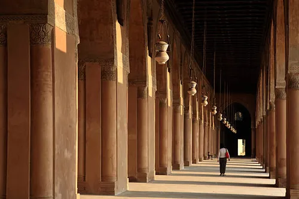
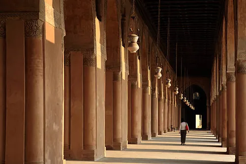
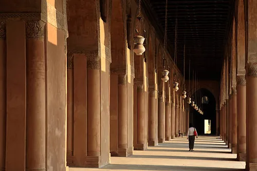
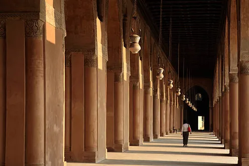

 

La mosquée Ibn Touloun est l'une des plus anciennes et des plus grandes mosquées d'Égypte, construite entre 876 et 879 après J.-C. sous le règne d'Ahmad ibn Touloun, gouverneur abbasside de l'Égypte. Elle est considérée comme un chef-d'œuvre de l'architecture islamique ancienne.
La mosquée se distingue par son immense cour carrée (92 mètres de côté) entourée d'arcades et son minaret unique en forme de spirale, inspiré de la Grande Mosquée de Samarra en Irak. L'ensemble est construit en briques rouges recouvertes de stuc sculpté.
Son architecture sobre et majestueuse, avec ses arcs en plein cintre et ses motifs géométriques, en fait un témoignage exceptionnel de l'art islamique des premiers siècles.
La mosquée a été construite lorsque Ibn Touloun établit sa dynastie indépendante des Abbassides. Elle faisait partie d'une grande cité appelée al-Qata'i, dont elle est le seul vestige restant.
Au 12ème siècle, la mosquée servit d'hôpital pour les pèlerins revenant de La Mecque. Elle a été restaurée plusieurs fois, notamment sous le sultan mamelouk Lajin en 1296.
La mosquée a inspiré de nombreux architectes et apparaît dans plusieurs œuvres littéraires, dont un roman de Naguib Mahfouz. Elle reste aujourd'hui un lieu de prière actif et un site touristique majeur.